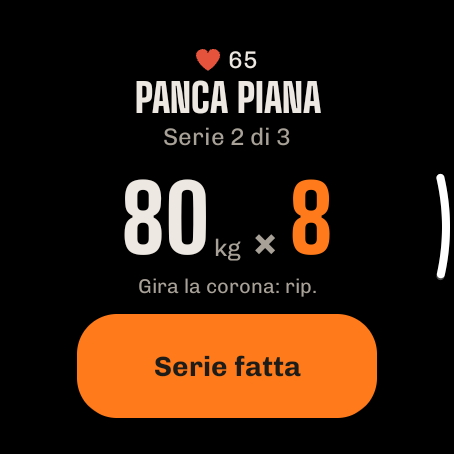
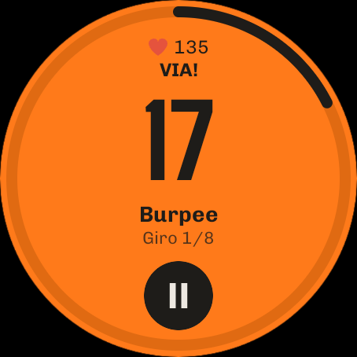

Guida
Tutte le funzioni di ImberGym spiegate passo per passo. Le funzioni contrassegnate con PREMIUM fanno parte di ImberGym Premium; tutto il resto è gratis.
01Primi passi
Al primo avvio di ImberGym bastano poche domande per configurare tutto. Puoi modificare tutto in seguito nel profilo.
- Lingua: italiano, tedesco, inglese, spagnolo o francese (preselezionata in base al telefono).
- Unità: metrico (kg, km) o imperiale (lb, mi). L’app salva sempre i valori esatti; l’unità cambia solo la visualizzazione.
- Su di te: nome, genere (incluso «preferisco non dirlo»), età e, se vuoi, peso e altezza. Peso e altezza servono per gli esercizi a corpo libero e per il tuo obiettivo calorico.
- Obiettivo e allenamento: obiettivo (ad es. aumentare la massa, perdere grasso), livello di attività, dove ti alleni (palestra, casa con manubri, senza attrezzi) e giorni di allenamento facoltativi. I giorni di allenamento sono solo una pianificazione: nulla viene mai segnato come «saltato».
- Timer di recupero: se dopo ogni serie parte un conto alla rovescia.
- Contare le calorie? Senza alimentazione la scheda «Alimentazione» sparisce e ImberGym diventa un puro diario di allenamento.
- Scheda iniziale e calendario: l’app può creare una scheda per principianti adatta e salvare gli allenamenti nel tuo calendario (vedi Calendario).
Nuovo telefono? Tocca «Ripristina un backup» nella prima pagina e scegli il file ZIP del tuo backup (vedi Backup).
02Com’è organizzata l’app
- Home: la tua giornata: settimana, consiglio, schede, avviare un allenamento.
- Schede: le tue schede, i modelli e la libreria esercizi.
- Storico: statistiche, tutti gli allenamenti e i record.
- Alimentazione: calorie, macro, alimenti e ricette (disattivabile).
- Profilo: impostazioni, misure corporee, integratori, palestre, backup e altro.
I messaggi in basso spariscono dopo qualche secondo o con un tocco, anche quelli con «Annulla».
03Home

Settimana
La barra da lunedì a domenica mostra gli allenamenti fatti in arancione con un segno di spunta, i prossimi giorni pianificati tratteggiati e oggi con una cornice.
Consigliato oggi
Se la scheda usata più di recente ha più sessioni, la scheda propone quella giusta, in base all’ordine della scheda e al recupero dei tuoi muscoli (vedi Consiglio). «Inizia allenamento» ti fa partire subito.
Le tue schede
- Tutte le schede sono chiuse, quella allenata più di recente per prima. Toccala per aprirla e vedere ogni sessione con l’ultima volta (durata, serie, volume o distanza).
- ▶ avvia la sessione successiva. Se una scheda ne ha più di una, l’app chiede quale: quella prevista è in alto.
- Toccando una scheda si apre l’ultimo allenamento di quella sessione con tutte le serie.
- Con il menu ⋮ puoi «Rimuovi dalla home» (con annullamento). La scheda resta nella scheda Schede e ricompare appena la alleni di nuovo.
- Anche gli allenamenti liberi delle ultime quattro settimane compaiono qui (con il nome dei loro esercizi, ad es. «Escursionismo») e si ripetono con ▶.
Avvio rapido
- Altra sessione: avvia qualsiasi sessione di una scheda.
- Allenamento libero: senza scheda, aggiungi gli esercizi strada facendo.
- Intervalli: Tabata e altro. PREMIUM
- Sfida: quante ripetizioni riesci a fare? Conta la fotocamera.
- All’aperto con GPS: registra corse, giri in bici ed escursioni. PREMIUM
In base alle impostazioni, la home mostra anche «Alimentazione di oggi», «Integratori di oggi», una registrazione GPS aperta («continua») e in alto a destra un’icona per le tue tessere.
04Schede e modelli
Modelli
La scheda Schede contiene schede pronte: principianti (palestra, casa con e senza manubri), total body A/B, superiore/inferiore, push/pull/gambe, split per gruppi muscolari, addome-gambe-glutei, calisthenics, kettlebell, elastici, yoga e altro. Avvia un modello direttamente o copialo come scheda personale. Alla copia l’app chiede se usare il timer di recupero.
Creare e modificare una scheda
- Scheda Schede → «Nuova scheda», dalle un nome.
- Aggiungi sessioni (ad es. Push, Pull, Gambe). Le sessioni sono una sequenza, non giorni fissi della settimana.
- Aggiungi esercizi a ogni sessione e imposta serie, ripetizioni (anche un intervallo come 8–12), recupero tra le serie e recupero prima dell’esercizio successivo. «Per lato» segna gli esercizi unilaterali.
- Superserie: collega due esercizi consecutivi: durante l’allenamento si alternano e il recupero arriva dopo il giro.
- Aggiungi un blocco a intervalli (Tabata ecc.) sotto la lista: vedi Allenamento a intervalli.
Ogni modifica viene salvata subito. Una stima della durata in alto mostra quanto dura circa la sessione. Nell’editor attivi anche il timer di recupero della scheda e scegli se mostrarla nella home.
Condividere una scheda con un QR code
Nell’editor della scheda tocca l’icona QR: tutta la scheda è nel codice, senza server. «Condividi come immagine» la invia ad es. via messaggio. Condividere è gratis.
Scansiona scheda PREMIUM: scheda Schede → «Scansiona scheda», inquadra il codice con la fotocamera o caricalo da un’immagine, controlla l’anteprima e importa.
Gratis: fino a 5 schede personali (i modelli copiati contano); illimitate con Premium.
05Esercizi

Libreria esercizi
Oltre 250 esercizi, dalle macchine allo yoga. Cerca per nome o muscolo e filtra per muscolo e attrezzo.
Dettaglio dell’esercizio
- Animazione del movimento con i muscoli coinvolti in arancione (principali pieni, secondari più chiari), la fase («Spingi», «Scendi piano») e un contatore di ripetizioni.
- Muscoli e attrezzo, «Esecuzione» con tempo e consigli sulla tecnica.
- I tuoi progressi: un grafico dei tuoi valori nel corso degli allenamenti.
- Nel calisthenics, i livelli di progressione (più facile/più difficile).
La figura esiste in versione maschile e femminile: scegli nel profilo, in «Figura».
Creare un esercizio personale
- Libreria → crea il tuo esercizio.
- Scegli nome, attrezzo e tipo di registrazione: peso × rip., corpo libero × rip., rip. con resistenza dell’elastico, tempo, cardio o registrazione GPS (per i tuoi sport all’aperto; con in più «Mostra il passo» e «Pausa automatica»).
- Tocca i muscoli sulla mappa del corpo: 1× = principale, 2× = secondario, 3× = rimuovi.
Gli esercizi personali con storico vengono archiviati all’eliminazione: il tuo storico resta. Gratis fino a 5 esercizi personali, illimitati con Premium.
06Allenamento

Avviare
Dalla home (▶, «Consigliato oggi», «Altra sessione», «Allenamento libero») o dalla scheda Schede. Un allenamento in corso sopravvive anche al riavvio del telefono: aprendo l’app ci torni direttamente.
La schermata di allenamento
- Un esercizio per pagina: scorri per cambiare esercizio; l’ultima pagina è il riepilogo. In alto: esercizio x di y, durata dell’allenamento e (con fascia cardio) la tua frequenza cardiaca.
- Lista delle serie: fatte, «ora» (arancione) e da fare. Tocca una serie per selezionarla.
- Valori: cambia peso e ripetizioni con −/+ o tocca il numero grande per digitarlo (valgono virgola e punto). I valori dell’ultima volta sono già inseriti.
- «Serie n fatta» segna la serie, avvia il recupero e passa da sola all’esercizio successivo (in superserie, all’esercizio abbinato).
- Aggiungi serie per una serie in più. Le serie non fatte restano vuote e vengono scartate alla fine.
Aiuti nella scheda della serie
- Tocca la miniatura dell’esercizio: animazione ed esecuzione senza lasciare l’allenamento.
- Regolazione attrezzo (macchine, cavi, bilanciere): salva ad es. il numero della macchina in palestra e l’altezza del sedile («D7 · sedile 4»); la prossima volta la ritrovi e compare come etichetta arancione accanto al nome dell’esercizio (allenamento, scheda, elenco esercizi).
- Incremento di peso (ad es. manubri): il passo di −/+ per attrezzo (predefinito 2,5 kg / 5 lb).
- Occupata? Cambia o Cambia esercizio: scegli un’alternativa adatta (solo prima di aver fatto una serie dell’esercizio).
- Suggerimento di progressione: se fai tutte le ripetizioni, l’app propone più peso (o meno assistenza, un elastico più forte, il livello successivo). Si applica solo con «Applica».
- Nuovo record! compare subito dopo aver segnato una serie quando superi un valore precedente.
Menu ⋮
Aggiungi esercizio, scegli il luogo PREMIUM, mostra tessera PREMIUM, timer di recupero sì/no, rimuovi esercizio, elimina allenamento.
Cardio ed esercizi di tenuta
Gli esercizi cardio non hanno serie: tempo e distanza (piani sullo stepper), livello sulle macchine e poi «Fatto». Gli esercizi di tenuta (ad es. plank) registrano i secondi.
Corpo libero e assistenza
Negli esercizi a corpo libero inserisci la zavorra; in quelli assistiti (ad es. trazioni assistite) l’assistenza: l’app calcola con il peso corporeo del profilo. Se manca, lo chiede una volta alla prima serie.
Terminare
«Fine» nella pagina di riepilogo, oppure ✕ / il tasto indietro: l’app chiede «Termina / Elimina / Continua». Senza serie fatte non viene salvato nulla.
07Recupero e schermata di blocco
- Dopo ogni serie in basso scorre il conto alla rovescia del recupero con «A seguire», −15 s, +15 s e «Salta». La durata viene dalla scheda (recupero tra le serie o prima dell’esercizio successivo).
- Il timer continua anche se blocchi il telefono o cambi app; una notifica mostra il conto alla rovescia e alla fine suona il segnale di recupero.
- Scegli il segnale di recupero nel profilo: bip, gong, campana, fischietto, campana da boxe, delicato, suono di sistema o nessuno, con ascolto di prova. La vibrazione ha un suo interruttore.
- Disattivare il timer: per scheda nell’editor, per gli allenamenti liberi nel profilo e durante un allenamento con ⋮.
- Recupero in base alla FC: con la fascia cardio il recupero finisce appena la frequenza cardiaca scende alla tua soglia (non prima di 30 s, al più tardi con il timer).
Schermata di blocco
Durante un allenamento ImberGym compare sopra la schermata di blocco: logo e un grande orologio (recupero o durata dell’allenamento). Dopo 2 minuti si scurisce, un tocco la riaccende; «Tocca per sbloccare» ti riporta all’allenamento. Lo schermo resta acceso durante l’allenamento.
08Allenamento a intervalli PREMIUM

Avvio rapido
- Home → riquadro «Intervalli».
- Scegli un modello: Tabata 20/10 × 8, HIIT 40/20 × 8, 30/30 × 10 o EMOM 60 s × 10; tutto è regolabile: lavoro, recupero, giri, blocchi e recupero tra i blocchi.
- Aggiungi esercizi: si alternano a ogni giro.
- «Avvia intervalli».
Come funziona
Dopo 10 s di preparazione un grande conto alla rovescia mostra il lavoro (arancione) e il recupero (grigio, con «A seguire» e la figura). Prima del lavoro una voce conta in inglese «One, two, three – go!» e prima della fine «Three, two, one – stop!» (disattivabile nel segnale di recupero del profilo; allora suonano dei bip). Funziona anche a telefono bloccato. Metti in pausa e termina quando vuoi; gli intervalli fatti vengono salvati. Alla fine puoi inserire le ripetizioni per giro.
In una scheda
Aggiungi un «Blocco a intervalli (Tabata e altro)» nell’editor della scheda: il blocco diventa una pagina a sé dell’allenamento.
Conta con la fotocamera SPERIMENTALE
Negli esercizi senza attrezzi (squat, squat jump, split squat, affondi indietro, burpee, varianti di piegamenti) e in crunch, sit-up, crunch inverso, V-up, leg raise da sdraiato e sollevamento ginocchia da sdraiato, la fotocamera può contare le ripetizioni. In plank alto, plank e plank laterale misura per quanto tieni la posizione corretta: il tempo dell’intervallo continua, quello di tenuta solo finché spalle, bacino e caviglie sono in linea; altrimenti vedi «Bacino su!» o «Bacino giù!».
- Nella pagina del blocco tocca «Conta con la fotocamera (sperimentale)» e consenti la fotocamera.
- Metti il telefono di lato a 2–3 m, ad es. appoggiato a un muro o a una bottiglia. Per piegamenti, addominali o esercizi in piedi e a terra alternati: metti il telefono a terra, in verticale o in orizzontale, l’app si adatta. In orizzontale ruotano anche preparazione, contatore e riepilogo: secondi e ripetizioni grandi a sinistra, l’animazione a destra.
- «Inizia quando sono pronto» e mettiti in posizione. Appena resti fermo nell’inquadratura per 2 secondi, il blocco parte da solo (al più tardi dopo 20 secondi).
Durante il lavoro secondi e ripetizioni compaiono affiancati, sotto «perfette» (escursione completa) ed «eseguite» (non del tutto complete). Le ripetizioni troppo corte non contano. Alla fine il riepilogo mostra le ripetizioni per esercizio e giro, la percentuale di tecnica e un consiglio; i numeri sono già inseriti e modificabili.
L’immagine della fotocamera viene analizzata solo sul tuo telefono e mai salvata. Il riconoscimento resta fisso su di te anche se qualcuno si allena dietro di te in palestra. La funzione è ancora in prova: controlla i numeri alla fine.
Sfida
Home → riquadro «Sfida» (gratis): «Quanti piegamenti riesco a fare?» – conta la fotocamera. Tre tipi: Rip. max (finisce da sola dopo 6 secondi senza ripetizioni), Contro il tempo (il più possibile nel tempo scelto in minuti, ad es. 0,5, 1 o 30) e Tenuta (plank ecc.; finisce quando perdi la posizione per 2 secondi). Scegli un esercizio, posizionati come sopra e dopo «3 – 2 – 1 – Via!» si parte. Alla fine vedi il risultato con le «perfette», il tuo record precedente e, se è il caso, «Nuovo record!». La sfida viene salvata automaticamente (compare nello storico e conta per i record; eliminala lì se vuoi). Condividi invia il risultato come scheda grafica con esercizio, valore e, se l’hai ottenuto, «Nuovo record!».
09Consiglio e coach anti-stallo
Consigliato oggi
Nelle schede con più sessioni: se la sessione successiva della scheda è ben recuperata (almeno 85 %), viene consigliata quella; altrimenti la più recuperata. La scheda mostra il recupero dei principali gruppi muscolari e un avviso come «Gambe recuperato solo al 27 %». ⓘ spiega la regola. Disattivabile nel profilo.
Coach anti-stallo PREMIUM
Se un esercizio non migliora da 4 allenamenti (o 3 allenamenti in 3 settimane), prima della prima serie compare un avviso giallo con un consiglio, ad es. «oggi più leggero (70 kg × 8), poi riparti a spingere».
- Applica inserisce il peso più leggero (−10 %) nelle serie da fare.
- Altro mostra l’andamento e le opzioni: scarico, altro intervallo di ripetizioni, una variante, più recupero.
- Nascondi per 2 settimane se vuoi continuare così di proposito.
Cardio ed esercizi di tenuta non ricevono mai un avviso di stallo. Disattivabile nel profilo.
10Orologio (Wear OS) PREMIUM

Con un orologio Wear OS (ad es. Samsung Galaxy Watch 4 e successivi, Google Pixel Watch, OnePlus Watch, TicWatch) gestisci l’allenamento dal polso: il telefono può restare in tasca. Tutti i dati restano sul telefono; l’orologio li mostra soltanto e invia i tuoi inserimenti.
Installare
- ImberGym deve essere installata sul telefono.
- Il modo più semplice: Profilo → «Collega un orologio» → «Installa sull’orologio»: il Play Store si apre direttamente sull’orologio. La pagina mostra anche se ImberGym è già installata lì. Puoi anche cercare ImberGym nel Play Store dell’orologio.
- Alla prima apertura sull’orologio consenti notifiche e frequenza cardiaca.
Avviare un allenamento
L’orologio mostra tutte le schede con le loro sessioni, la successiva in arancione. Tocca per avviare l’allenamento su telefono e orologio. Se c’è già un allenamento in corso, l’orologio mostra subito la serie attuale.
Serie
- Esercizio, «Serie 2 di 3» e i tuoi valori dell’ultima volta.
- Tocca un valore → cambialo con −/+ (il peso con il tuo incremento). Tocca il numero → digita qualsiasi valore, ad es. 82,5.
- Con corona o ghiera girevole, ruotando cambi direttamente le ripetizioni.
- «Serie fatta» segna la serie, anche sul telefono.

Recupero
Conto alla rovescia con un anello; +15 aggiunge tempo, ▶ lo salta. L’orologio conta da solo e vibra alla fine del recupero, anche se l’app non è aperta o lo schermo è spento. Nel frattempo sul quadrante compare un’icona di ImberGym con il tempo restante.
Allenamento a intervalli
Nella pagina di un blocco a intervalli l’orologio mostra tipo, tempi ed esercizi con «Avvia intervalli». Poi: lavoro in arancione, recupero scuro con «A seguire»; vibrazione a ogni cambio. ⏸ mette in pausa; poi ▶ riprende o ✕ termina. Le ripetizioni per giro le inserisci dopo sul telefono.
Frequenza cardiaca
Durante l’allenamento l’orologio misura la frequenza cardiaca e la invia al telefono, come una fascia cardio (indicatore ❤, zone cardiache, dettagli dell’allenamento). Se è collegata una fascia cardio, ha la precedenza.
Riquadro
Aggiungi il riquadro «ImberGym» ai riquadri dell’orologio: mostra la sessione successiva con «Inizia» o, durante un allenamento, l’esercizio in corso.
Orologi più vecchi: gli orologi Tizen (ad es. Gear S3) non sono supportati. Garmin, Amazfit e altri spesso possono trasmettere la frequenza cardiaca come una fascia cardio (vedi Frequenza cardiaca).
11All’aperto e Trackshow PREMIUM

Registrare
- Home → «All’aperto con GPS» → scegli l’attività (corsa, bici, escursione…).
- Consenti la posizione «durante l’uso dell’app». Avvia la registrazione: lo schermo può essere spento; una notifica mostra «ImberGym sta registrando».
- Metti in pausa e riprendi quando vuoi. Nella corsa e in bici l’app va in pausa da sola dopo 10 s da fermo e riparte al primo passo (non nelle escursioni: la sosta fa parte del giro). Dopo una pausa manuale riprende da sola appena riparti.
- «Termina» salva il giro come allenamento con distanza, tempo, velocità o passo e dislivello (dal barometro).
Trackshow
Alla fine la Trackshow ripercorre il tuo giro sulle curve di livello, con volo di camera e momenti clou (tratto più ripido, punto più alto, chilometro più veloce, record), scheda del risultato e profilo altimetrico. «Riproduci di nuovo» la ripete; tocca il nome del luogo per modificarlo.
Condividi come immagine per le storie (9:16) o come video con volo di camera. Nei dettagli dell’allenamento c’è anche l’esportazione GPX per altre app.
12Storico e statistiche

Statistiche
- Periodo settimana / mese / 3 mesi (fino a oggi) confrontato con il periodo precedente: allenamenti, durata, volume.
- Cosa hai allenato PREMIUM: mappa del corpo davanti e dietro; più serie, colore più intenso; tocca per vedere il numero. Passa a Recupero: quanto è recuperato ogni muscolo (stima).
- Distribuzione per gruppo muscolare come anello.
- Record: i più recenti; «Vedi tutti» apre la lista. Tocca un record per vedere l’andamento dell’esercizio.
- Mostra peso e grasso corporeo e il riepilogo settimanale e annuale come scheda grafica da condividere.
Allenamenti

Tutti gli allenamenti per anno e mese con i totali. Filtra per scheda (inclusi gli «Allenamenti liberi») e per esercizio, combinabili.
Dettagli dell’allenamento
- Tutti gli esercizi e le serie, coppe per i record, palestra o luogo.
- Modifica: tocca una serie per cambiarla, aggiungi o elimina serie, regola data, ora di inizio e durata, elimina l’allenamento.
- Frequenza cardiaca (media, massimo, curva): dalla fascia cardio o con «Carica FC dall’orologio».
- Condividi allenamento come scheda grafica con muscoli, esercizi e nuovi record; nei giri GPS, la Trackshow e il GPX.
Record
Per esercizio: peso massimo, 1RM stimato, volume, più ripetizioni, tenuta più lunga; nel cardio distanza più lunga, passo o velocità più veloce, durata più lunga. Un record conta solo se supera un valore precedente.
13Alimentazione

La giornata
Con ‹ › cambi giorno. L’anello mostra quanto hai mangiato rispetto all’obiettivo e quanto «rimane»; sotto, proteine, carboidrati e grassi. Quattro pasti: colazione, pranzo, cena e spuntini.
Aggiungere alimenti

- + su un pasto apre i riquadri: prima ciò che mangi spesso in quel pasto, altrimenti suggerimenti tipici.
- Toccare aggiunge subito una porzione (la quantità è sotto il nome), con «Annulla». Il piccolo − sul riquadro toglie una porzione.
- Pressione lunga apre la quantità in grammi, millilitri o porzioni (anche ½) con la tabella nutrizionale.
- Cerca: oltre 1.200 alimenti e piatti di tutti i giorni, offline.
- Codice a barre: scansiona un prodotto: viene cercato prima sul telefono, poi su Open Food Facts. Controlla i valori e salva: la prossima volta lo trovi subito.
- Crea un alimento personale (valori per 100 g o 100 ml, interruttore «Liquido») o usa l’aggiunta rapida (solo calorie).
- Dalle ricette: una ricetta direttamente in questo pasto.
- Tocca una voce per cambiare la quantità o rimuoverla.
Obiettivi
«Modifica obiettivi» (o tocca l’anello): scegli il tuo obiettivo, un obiettivo calorico automatico (in base ad altezza, peso, età e attività) o personale, macro singoli e un obiettivo per i giorni di riposo. Obiettivo dinamico PREMIUM: aggiunge una parte dell’attività misurata da Health Connect (cursore 0–100 %).
Le calorie non ti interessano? Profilo → disattiva l’alimentazione; la scheda sparisce.
14Ricette
Alimentazione → «Scopri ricette» o la libreria: 40 ricette originali con filtri (pasto, proteico, vegetariano). Una ricetta mostra calorie e macro per porzione, ingredienti con calcolo delle porzioni (−/+, ½, ¼, ¾), passaggi e un consiglio. «Aggiungi 1 porzione al diario» la registra. 6 ricette base sono gratis; tutte le altre e le tue ricette (ingredienti dalla ricerca alimenti, foto personale) sono Premium PREMIUM.
15Peso, grasso corporeo e foto dei progressi
Peso e grasso corporeo
- Profilo → «Peso e grasso corporeo» → aggiungi una voce. Grasso corporeo come valore o stimato dalle circonferenze (collo, vita e, se serve, fianchi; serve l’altezza nel profilo).
- La scheda «Attuale» mostra la media di 7 giorni e la variazione. Grafici PREMIUM su 1 mese, 3 mesi, 1 anno o tutto.
- Le voci sono raggruppate per mese; toccale per modificarle o eliminarle.
- Importa da Health Connect (ad es. una bilancia Withings): attiva l’interruttore e concedi il permesso; le nuove misurazioni arrivano da sole; scorri verso il basso per aggiornare subito.
- Il peso del profilo segue sempre la voce più recente.
Foto dei progressi PREMIUM
Profilo → «Foto dei progressi»: scegli la vista (davanti, di lato, dietro); «Fotocamera» mostra l’ultima foto semitrasparente come sovrimpressione (stessa posa e distanza), con autoscatto. Confronta prima/dopo con un cursore o una dissolvenza. Le foto restano nell’app, né in galleria né nel backup di Android; «Condividi / salva», «Esporta tutte le foto» e «Condividi il confronto» le portano fuori solo quando vuoi tu.
16Frequenza cardiaca e Health Connect
Frequenza cardiaca dal tuo orologio
Se il tuo orologio scrive in Health Connect (ad es. Samsung, Google, Garmin tramite Health Connect): nei dettagli dell’allenamento tocca «Carica FC dall’orologio»; concedi il permesso una volta e poi ImberGym recupera da sola la frequenza cardiaca degli allenamenti recenti. Consiglio: avvia un allenamento anche sull’orologio; altrimenti misura solo ogni pochi minuti.
Orologi Huawei: Huawei Health non scrive in Health Connect. L’app «Health Sync» trasferisce la frequenza cardiaca; poi funziona come sopra.
Fascia cardio e zone

- Profilo → «Fascia cardio e zone» → indossa la fascia, «Cerca fascia», associala (consenti «Dispositivi nelle vicinanze»).
- Durante un allenamento si collega da sola; la tua frequenza cardiaca compare in alto nel colore della sua zona.
- Imposta la FC massima (altrimenti 220 − età); da qui derivano cinque zone.
- Se vuoi, recupero in base alla FC con la tua soglia (vedi Recupero).
Molti orologi possono trasmettere la frequenza cardiaca come una fascia (ad es. Garmin «Trasmetti frequenza cardiaca», orologi Huawei recenti «Condividi frequenza cardiaca», Polar, Coros, Suunto): associali come una fascia.
17Integratori
Profilo → «Integratori»: aggiungi i tuoi prodotti (nome, forma, unità come mg, UI, pz., gocce…, quantità abituale e, se vuoi, principio attivo per unità). Tocca «Preso» ogni giorno (pressione lunga = altra quantità, ↶ = annulla, anche per i giorni passati). I promemoria hanno ora e giorni della settimana (ogni giorno, lun–ven o a scelta). Il calendario mensile mostra i giorni in cui hai preso tutto. ImberGym di proposito non suggerisce prodotti né dosaggi.
18Palestre e tessere PREMIUM
Le mie palestre
Profilo → «Le mie palestre»: crea una palestra con un nome e «Usa la posizione attuale». Quando inizi un allenamento lì, l’app riconosce la palestra («Luogo riconosciuto»); altrimenti sceglila durante l’allenamento con ⋮ → «Scegli il luogo». Il luogo compare nello storico, nei dettagli e nell’evento del calendario.
Tessere
Profilo → «Tessere»: scansiona il codice a barre o QR della tessera con la fotocamera o inserisci numero e formato, scegli nome e colore e abbina una palestra. Toccala per mostrarla a schermo intero con luminosità massima, per il lettore all’ingresso. Accesso rapido con l’icona della tessera nella home e durante l’allenamento con ⋮ → «Mostra tessera». Le tessere restano solo sul telefono (mai in un backup). Purtroppo un telefono non può imitare chiavette con transponder (RFID/NFC).
19Calendario
Profilo → «Salva gli allenamenti completati nel calendario»: concedi il permesso e scegli un calendario; si possono aggiungere anche gli allenamenti precedenti. Ogni allenamento concluso diventa un evento (titolo «ImberGym: nome della scheda», inizio e fine, esercizi e serie nella descrizione, palestra come luogo), aggiornato quando lo modifichi e rimosso quando lo elimini. Alla disattivazione l’app chiede se eliminare le voci esistenti. Non vengono creati eventi in anticipo.
20Profilo e impostazioni
- Dati personali: nome, genere, età, altezza, peso, obiettivo, attività.
- Lingua e unità: le modifiche valgono subito.
- Figura: figura maschile o femminile nelle animazioni e nella mappa del corpo.
- Segnale di recupero: suono con ascolto di prova, vibrazione, «Annunci vocali negli intervalli».
- Timer di recupero predefinito per allenamenti liberi e nuove schede.
- Consiglio del giorno e coach anti-stallo sì/no.
- Alimentazione sì/no.
- Peso e grasso corporeo, foto dei progressi, integratori, fascia cardio e zone, le mie palestre, tessere, calendario, dati e backup.
- ImberGym Premium, Valuta ImberGym e Informazioni su ImberGym (versione, privacy, contatto, fonti, licenze).
21Backup, importazione ed esportazione
Backup
Profilo → «Dati e backup» → crea backup: un file ZIP con tutti i dati (foto dei progressi solo se le includi); salvalo con il menu di condivisione, ad es. su Google Drive o in File. Conservalo in un luogo sicuro; ImberGym non ha cloud.
Ripristinare
«Scegli file di backup» → controlla data e numero di allenamenti → «Sostituisci». L’app si riavvia con i dati del backup. Si può fare anche nella prima pagina dopo l’installazione.
Importare da altre app
«Scegli file CSV»: vengono riconosciute le esportazioni di Strong e Hevy (per Strong scegli l’unità di peso). L’anteprima mostra allenamenti, serie e nuovi esercizi personali; gli allenamenti doppi vengono saltati.
Esportare
«Esporta allenamenti (CSV)»: una riga per serie; si apre ad es. in Excel.
23Aiuto
- Il segnale di recupero non suona? Consenti le notifiche di ImberGym e controlla la modalità «Non disturbare».
- Manca la frequenza cardiaca negli allenamenti brevi? Senza un allenamento avviato sull’orologio misura solo ogni pochi minuti: allenati anche sull’orologio o usa una fascia cardio.
- La palestra non viene riconosciuta? Consenti la posizione e salva una volta la posizione della palestra quando sei lì.
Domande, richieste, errori: chr.mathai@gmail.com